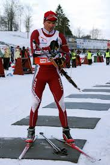
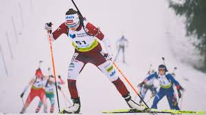
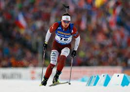

gada olimpiskajās spēlēs Latvijas vīriešu stafetes komanda ieņēma 6. vietu. Individuāli Jēkabs Nākums izcīnīja 5. vietu sprintā, Oļegs Maļuhins bija 6., bet Ilmārs Bricis – 5. vietā 20 km distancē.
gadā Oļegs Maļuhins uzvarēja Pasaules kausa sprintā Kanādā vienīgā Latvijas uzvara šādā līmenī.
Ilmārs Bricis izcīnīja divas Pasaules čempionāta bronzas medaļas un 2006. gada olimpiskajās spēlēs ieņēma 4. vietu iedzīšanā. Tajās pašās spēlēs Madara Līduma sasniedza 10. vietu 20 km distancē.
čempionātā Baiba Bendika ieņēma 5. vietu sprintā.
 
Mūsdienās vadošais Latvijas biatlonists ir Andrejs Rastorgujevs Eiropas čempions un 2024.
gada Pasaules čempionāta sudraba medaļas ieguvējs. Tajā pašā čempionātā Baiba Bendika ieņēma 5. vietu sprintā.

Atpakaļ uz
Vairāk par